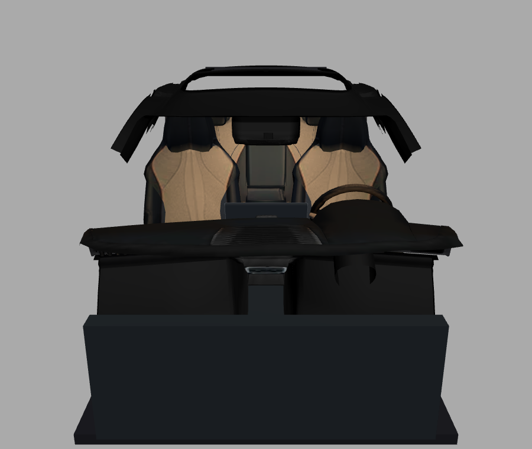
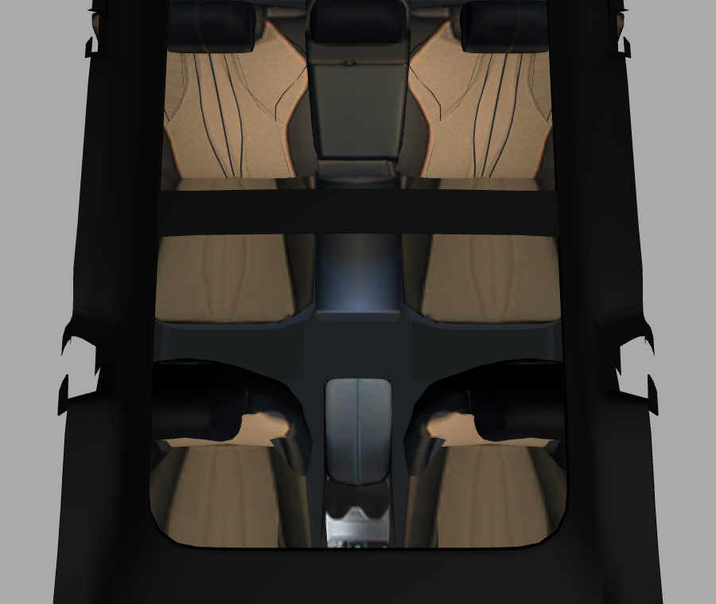

Current 3D model — seats proof
Rendered from the live file: neo3d/models/sealion6-9e87baf4.glb

Front seats, dashboard angle. Cognac centers; black headrests and both inner + outer sides — including the area circled between the seats.

Top-down, both rows. Front and rear match: cognac centers, black headrests and side bolsters.
This is the model on the server right now. If your app still shows tan sides, it's rendering an older copy cached on your device — opening this app in a private/incognito tab (no cache) will show these seats, and a one-time reinstall gets your installed app current.